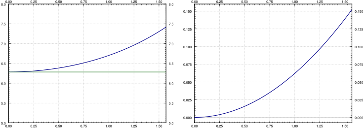

In this section we study two very standard examples of nonlinear systems. First, we look at the nonlinear pendulum equation. We saw the pendulum equation’s linearization before, but we noted it was only valid for small angles and short times. Now we find out what happens for large angles. Next, we look at the predator-prey equation, which finds various applications in modeling problems in biology, chemistry, economics, and elsewhere.
The first example we study is the pendulum equation \(\theta''+\frac{g}{L} \sin \theta = 0\text{.}\) Here, \(\theta\) is the angular displacement, \(g\) is the gravitational acceleration, and \(L\) is the length of the pendulum. In this equation we disregard friction, so we are talking about an idealized pendulum.
This equation is a conservative equation, so we can use our analysis of conservative equations from the previous section. Let us change the equation to a two-dimensional system in variables \((\theta,\omega)\) by introducing the new variable \(\omega\text{:}\)
The critical points of this system are when \(\omega = 0\) and \(-\frac{g}{L}
\sin \theta = 0\text{,}\) or in other words if \(\sin \theta = 0\text{.}\) So the critical points are when \(\omega = 0\) and \(\theta\) is a multiple of \(\pi\text{.}\) That is, the points are \(\ldots (-2\pi,0), (-\pi,0), (0,0), (\pi,0), (2\pi,0)
\ldots\text{.}\) While there are infinitely many critical points, they are all isolated. Let us compute the Jacobian matrix:
For conservative equations, there are two types of critical points. Either stable centers, or saddle points. The eigenvalues of the Jacobian matrix are \(\lambda = \pm \sqrt{-\frac{g}{L}\cos \theta}\text{.}\)
The eigenvalues are going to be real when \(\cos \theta < 0\text{.}\) This happens at the odd multiples of \(\pi\text{.}\) The eigenvalues are going to be purely imaginary when \(\cos \theta > 0\text{.}\) This happens at the even multiples of \(\pi\text{.}\) Therefore the system has a stable center at the points \(\ldots (-2\pi,0), (0,0), (2\pi,0) \ldots\text{,}\) and it has an unstable saddle at the points \(\ldots (-3\pi,0), (-\pi,0), (\pi,0), (3\pi,0) \ldots\text{.}\) Look at the phase diagram in Figure 8.6, where for simplicity we let \(\frac{g}{L} = 1\text{.}\)
In the linearized equation we have only a single critical point, the center at \((0,0)\text{.}\) Now we see more clearly what we meant when we said the linearization is good for small angles. The horizontal axis is the deflection angle. The vertical axis is the angular velocity of the pendulum. Suppose we start at \(\theta = 0\) (no deflection), and we start with a small angular velocity \(\omega\text{.}\) Then the trajectory keeps going around the critical point \((0,0)\) in an approximate circle. This corresponds to short swings of the pendulum back and forth. When \(\theta\) stays small, the trajectories really look like circles and hence are very close to our linearization.
When we give the pendulum a big enough push, it goes across the top and keeps spinning about its axis. This behavior corresponds to the wavy curves that do not cross the horizontal axis in the phase diagram. Let us suppose we look at the top curves, when the angular velocity \(\omega\) is large and positive. Then the pendulum is going around and around its axis. The velocity is going to be large when the pendulum is near the bottom, and the velocity is the smallest when the pendulum is close to the top of its loop.
At each critical point, there is an equilibrium solution. Consider the solution \(\theta = 0\text{;}\) the pendulum is not moving and is hanging straight down. This is a stable place for the pendulum to be, hence this is a stable equilibrium.
The other type of equilibrium solution is at the unstable point, for example \(\theta = \pi\text{.}\) Here the pendulum is upside down. Sure you can balance the pendulum this way and it will stay, but this is an unstable equilibrium. Even the tiniest push will make the pendulum start swinging wildly.
See Figure 8.7 for a diagram. The first picture is the stable equilibrium \(\theta = 0\text{.}\) The second corresponds to those “almost circles” in the phase diagram around \(\theta =0\) when the angular velocity is small. The third is the unstable equilibrium \(\theta =
\pi\text{.}\) The last picture corresponds to the wavy lines for large angular velocities.
for various values of \(C\text{.}\) Let us look at the initial condition of \((\theta_0,0)\text{,}\) that is, we take the pendulum to angle \(\theta_0\text{,}\) and just let it go (initial angular velocity 0). We plug the initial conditions into the above and solve for \(C\) to obtain
\begin{equation}
C = - \frac{2g}{L} \cos \theta_0 .
\end{equation}
Let us figure out the period. That is, the time it takes for the pendulum to swing back and forth. We notice that the trajectory about the origin in the phase plane is symmetric about both the \(\theta\) and the \(\omega\)-axis. That is, in terms of \(\theta\text{,}\) the time it takes from \(\theta_0\) to \(-\theta_0\) is the same as it takes from \(-\theta_0\) back to \(\theta_0\text{.}\) Furthermore, the time it takes from \(-\theta_0\) to \(0\) is the same as to go from \(0\) to \(\theta_0\text{.}\) Therefore, let us find how long it takes for the pendulum to go from angle 0 to angle \(\theta_0\text{,}\) which is a quarter of the full oscillation and then multiply by 4.
We figure out this time by finding \(\frac{dt}{d\theta}\) and integrating from \(0\) to \(\theta_0\text{.}\) The period is four times this integral. Let us stay in the region where \(\omega\) is positive. Since \(\omega = \frac{d\theta}{dt}\text{,}\) inverting we get
The integral is an improper integral, and we cannot in general evaluate it symbolically. We must resort to numerical approximation if we want to compute a particular \(T\text{.}\)
We plot \(T\text{,}\)\(T_{\text{linear}}\text{,}\) and the relative error \(\frac{T-T_{\text{linear}}}{T}\) in Figure 8.8. The relative error says how far is our approximation from the real period percentage-wise. Note that \(T_{\text{linear}}\) is simply a constant, it does not change with the initial angle \(\theta_0\text{.}\) The actual period \(T\) gets larger and larger as \(\theta_0\) gets larger. Notice how the relative error is small when \(\theta_0\) is small. It is still only \(15\%\) when \(\theta_0 = \nicefrac{\pi}{2}\text{,}\) that is, a 90 degree angle. The error is \(3.8\%\) when starting at \(\nicefrac{\pi}{4}\text{,}\) a 45 degree angle. At a 5 degree initial angle, the error is only \(0.048 \%\text{.}\)
Figure8.8.The plot of \(T\) and \(T_{\text{linear}}\) with \(\frac{g}{L} =
1\) (left), and the plot of the relative error \(\frac{T-T_{\text{linear}}}{T}\) (right), for \(\theta_0\) between 0 and \(\nicefrac{\pi}{2}\text{.}\)
While it is not immediately obvious from the formula, it is true that
\begin{equation}
\lim_{\theta_0 \uparrow \pi} T = \infty .
\end{equation}
That is, the period goes to infinity as the initial angle approaches the unstable equilibrium point. So if we put the pendulum almost upside down it may take a very long time before it gets down. This is consistent with the limiting behavior, where the exactly upside down pendulum never makes an oscillation, so we could think of that as infinite period.
Subsection8.3.2Predator-prey or Lotka–Volterra systems
One of the most common simple applications of nonlinear systems are the so-called predator-prey or Lotka–Volterra 1
Named for the American mathematician, chemist, and statistician Alfred James Lotka (1880–1949) and the Italian mathematician and physicist Vito Volterra (1860–1940).
systems. For example, these systems arise when two species interact, one as the prey and one as the predator. It is then no surprise that the equations also see applications in economics. The system also arises in chemical reactions. In biology, this system of equations explains the natural periodic variations of populations of different species in nature. Before the application of differential equations, these periodic variations in the population baffled biologists.
We keep with the classical example of hares and foxes in a forest, it is the easiest to understand.
\begin{equation}
\begin{aligned}
& x = \# \text{ of hares (the prey),} \\
& y = \# \text{ of foxes (the predator).}
\end{aligned}
\end{equation}
When there are a lot of hares, there is plenty of food for the foxes, so the fox population grows. However, when the fox population grows, the foxes eat more hares, so when there are lots of foxes, the hare population should go down, and vice versa. The Lotka–Volterra model proposes that this behavior is described by the system of equations
The hares are expected to simply grow exponentially in the absence of foxes. That is where the \(ax\) term comes in, the growth in population is proportional to the population itself. We are assuming the hares always find enough food and have enough space to reproduce. However, there is another component \(-byx\text{,}\) that is, the population also is decreasing proportionally to the number of foxes. Together we can write the equation as \((a-by)x\text{,}\) so it is like exponential growth or decay but the constant depends on the number of foxes.
The foxes need food (hares) to reproduce: the more food, the bigger the rate of growth, hence the \(cxy\) term. On the other hand, there are natural deaths in the fox population, and hence the \(-dy\) term.
See Figure 8.9 for the phase portrait. In this example it makes sense to also plot \(x\) and \(y\) as graphs with respect to time. Therefore the second graph in Figure 8.9 is the graph of \(x\) and \(y\) on the vertical axis (the prey \(x\) is the thinner line with taller peaks), against time on the horizontal axis. The particular solution graphed was with initial conditions of 20 foxes and 50 hares.
Let us analyze what we see on the graphs. We work in the general setting rather than putting in specific numbers. We start with finding the critical points. Set \((a-by)x = 0\text{,}\) and \((cx-d)y = 0\text{.}\) The first equation is satisfied if either \(x=0\) or \(y=\nicefrac{a}{b}\text{.}\) If \(x=0\text{,}\) the second equation implies \(y=0\text{.}\) If \(y= \nicefrac{a}{b}\text{,}\) the second equation implies \(x=\nicefrac{d}{c}\text{.}\) There are two equilibria: at \((0,0)\) when there are no animals at all, and at \((\nicefrac{d}{c},\nicefrac{a}{b})\text{.}\) In our specific example \(x = \nicefrac{d}{c} = 100\text{,}\) and \(y = \nicefrac{a}{b} = 40\text{.}\) This is the point where there are 100 hares and 40 foxes.
At the origin \((0,0)\) we get the matrix \(\left[ \begin{smallmatrix}
a & 0 \\
0 & -d
\end{smallmatrix} \right]\text{,}\) so the eigenvalues are \(a\) and \(-d\text{,}\) hence real and of opposite signs. So the critical point at the origin is a saddle. This makes sense. If you started with some foxes but no hares, then the foxes would go extinct, that is, you would approach the origin. If you started with no foxes and a few hares, then the hares would keep multiplying without check, and so you would go away from the origin.
The eigenvalues satisfy \(\lambda^2 + ad = 0\text{.}\) In other words, \(\lambda = \pm i \sqrt{ad}\text{.}\) The eigenvalues being purely imaginary, we are in the case where we cannot quite decide using only linearization. We could have a stable center, spiral sink, or a spiral source. That is, the equilibrium could be asymptotically stable, stable, or unstable. Of course I gave you a picture above that seems to imply it is a stable center. But never trust a picture only. Perhaps the oscillations are getting larger and larger, but only very slowly. Of course this would be bad as it would imply something will go wrong with our population sooner or later. And I only graphed a very specific example with very specific trajectories.
How can we be sure we are in the stable situation? As we said before, in the case of purely imaginary eigenvalues, we have to do a bit more work. Previously we found that for conservative systems, there was a certain quantity that was conserved on the trajectories, and hence the trajectories had to go in closed loops. We can use a similar technique here. We just have to figure out what is the conserved quantity. After some trial and error we find the constant
\begin{equation}
C = \frac{y^a x^d}{e^{cx+by}} = y^a x^d e^{-cx-by}
\end{equation}
is conserved. Such a quantity is called the constant of motion. Let us check \(C\) really is a constant of motion. How do we check, you say? Well, a constant is something that does not change with time, so let us compute the derivative with respect to time:
\begin{equation}
C' =
a y^{a-1}y' x^d e^{-cx-by}
+
y^a d x^{d-1} x' e^{-cx-by}
+
y^a x^d e^{-cx-by} (-cx'-by') .
\end{equation}
Our equations give us what \(x'\) and \(y'\) are so let us plug those in:
\begin{equation}
\begin{split}
C' & =
a y^{a-1} (cx-d)y x^d e^{-cx-by}
+
y^a d x^{d-1} (a-by)x e^{-cx-by}
\\
& \phantom{mm} +
y^a x^d e^{-cx-by} \bigl(-c(a-by)x-b(cx-d)y\bigr)
\\
& =
y^a x^d e^{-cx-by}
\Bigl(
a (cx-d)
+
d (a-by)
+
\bigl(-c(a-by)x-b(cx-d)y\bigr) \Bigr)
\\
& =
0 .
\end{split}
\end{equation}
So along the trajectories \(C\) is constant. In fact, the expression \(C =
\frac{y^a x^d}{e^{cx+by}}\) gives us an implicit equation for the trajectories. In any case, once we have found this constant of motion, it must be true that the trajectories are simple curves—the level curves of \(\frac{y^a x^d}{e^{cx+by}}\text{.}\) It turns out, the critical point at \((\nicefrac{d}{c},\nicefrac{a}{b})\) is a maximum for \(C\) (left as an exercise). So \((\nicefrac{d}{c},\nicefrac{a}{b})\) is a stable equilibrium point, and we do not have to worry about the foxes and hares going extinct or their populations exploding.
One blemish on this wonderful model is that the number of foxes and hares are discrete quantities and we are modeling with continuous variables. Our model has no problem with there being 0.1 fox in the forest for example, while in reality that makes no sense. The approximation is a reasonable one as long as the number of foxes and hares are large, but it does not make much sense for small numbers. One must be careful in interpreting any results from such a model.
An interesting consequence (perhaps counterintuitive) of this model is that adding animals to the forest might lead to extinction, because the variations will get too big, and one of the populations will get close to zero. For example, suppose there are 20 foxes and 50 hares as before, but now we bring in more foxes, bringing their number to 200. If we run the computation, we find the number of hares will plummet to just slightly more than 1 hare in the whole forest. In reality that most likely means the hares die out, and then the foxes will die out as well as they will have nothing to eat.
Showing that a system of equations has a stable solution can be a very difficult problem. When Isaac Newton put forth his laws of planetary motions, he proved that a single planet orbiting a single sun is a stable system. But any solar system with more than 1 planet proved very difficult indeed. In fact, such a system behaves chaotically (see Section 8.5), meaning small changes in initial conditions lead to very different long-term outcomes. From numerical experimentation and measurements, we know the earth will not fly out into the empty space or crash into the sun, for at least some millions of years or so. But we do not know what happens beyond that.
Take the damped nonlinear pendulum equation\(\theta '' + \mu \theta' +
(\nicefrac{g}{L})
\sin \theta = 0\) for some \(\mu > 0\) (that is, there is some friction).
Do the same for any \(\mu > 0\) and any \(g\) and \(L\text{,}\) but such that the damping is small, in particular, \(\mu^2 <
4(\nicefrac{g}{L})\text{.}\)
For the following two values of \(\gamma\text{,}\) find and classify all the critical points in the positive quadrant, that is, for \(x \geq 0\) and \(y \geq 0\text{.}\) Then sketch the phase diagram. Discuss the implication for the long term behavior of the population.
Suppose \(a,b,c,d\) are positive constants, and also suppose \(x\) and \(y\) are positive variables. Show \(\frac{y^a x^d}{e^{cx+by}}\) attains a maximum at \((\nicefrac{d}{c},\nicefrac{a}{b})\text{.}\)
Suppose that for the pendulum equation we take a trajectory giving the spinning-around motion, for example \(\omega = \sqrt{\frac{2g}{L} \cos \theta
+ \frac{2g}{L} + \omega_0^2}\text{.}\) This is the trajectory where the lowest angular velocity is \(\omega_0^2\text{.}\) Find an integral expression for how long it takes the pendulum to go all the way around.
Find the expression for \(\omega\) giving the trajectory with initial condition \((0,\omega_0)\text{.}\) Hint: Figure out what \(C\) should be in terms of \(\omega_0\text{.}\)
Find the crucial angular velocity \(\omega_1\text{,}\) such that for any higher initial angular velocity, the pendulum will keep going around its axis, and for any lower initial angular velocity, the pendulum will simply swing back and forth. Hint: When the pendulum doesn’t go over the top the expression for \(\omega\) will be undefined for some \(\theta\)s.
What do you think happens if the initial condition is \((0,\omega_1)\text{,}\) that is, the initial angle is 0, and the initial angular velocity is exactly \(\omega_1\text{.}\)
Take the damped nonlinear pendulum equation \(\theta '' + \mu \theta' +
(\nicefrac{g}{L})
\sin \theta = 0\) for some \(\mu > 0\) (that is, there is friction). Suppose the friction is large, in particular \(\mu^2 > 4 (\nicefrac{g}{L})\text{.}\)
a) Critical points are \(\omega=0\text{,}\)\(\theta=k\pi\) for any integer \(k\text{.}\) When \(k\) is odd, we have a saddle point. When \(k\) is even we get a sink. b) The findings mean the pendulum will simply go to one of the sinks, for example \((0,0)\) and it will not swing back and forth. The friction is too high for it to oscillate, just like an overdamped mass-spring system.
Suppose we have the system predator-prey system where the foxes are also killed at a constant rate \(h\) (\(h\) foxes killed per unit time): \(x' = (a-by)x,\)\(y' = (cx-d)y - h\text{.}\)
Put in the constants \(a=0.4\text{,}\)\(b=0.01\text{,}\)\(c=0.003\text{,}\)\(d=0.3\text{,}\)\(h=10\text{.}\) Analyze the critical points. What do you think it says about the forest?
a) Solving for the critical points we get \((0,-\nicefrac{h}{d})\) and \((\frac{bh+ad}{ac},\frac{a}{b})\text{.}\) The Jacobian matrix at \((0,-\nicefrac{h}{d})\) is \(\left[
\begin{smallmatrix}
a+bh/d & 0 \\
-ch/d & -d
\end{smallmatrix}
\right]\) whose eigenvalues are \(a+bh/d\) and \(-d\text{.}\) The eigenvalues are real of opposite signs and we get a saddle. (In the application, however, we are only looking at the positive quadrant so this critical point is irrelevant.) At \((\frac{bh+ad}{ac},\frac{a}{b})\) we get Jacobian matrix \(\left[
\begin{smallmatrix}
0 & -\frac{b \left( b h+a d\right) }{a c}\\
\frac{a c}{b} & \frac{b h+a d}{a}-d
\end{smallmatrix}
\right]\text{.}\) b) For the specific numbers given, the second critical point is \((\frac{550}{3},40)\) the matrix is \(\left[
\begin{smallmatrix}
0 & -11/6 \\
3/25 & 1/4
\end{smallmatrix}
\right]\text{,}\) which has eigenvalues \(\frac{5\pm i \sqrt{327}}{40}\text{.}\) Therefore there is a spiral source; the solution spirals outwards. The solution eventually hits one of the axes, \(x=0\) or \(y=0\text{,}\) so something will die out in the forest.
(challenging) Suppose the foxes never die. That is, we have the system \(x' = (a-by)x,\)\(y' = cxy\text{.}\) Find the critical points and notice they are not isolated. What will happen to the population in the forest if it starts at some positive numbers. Hint: Think of the constant of motion.
The critical points are on the line \(x=0\text{.}\) In the positive quadrant the \(y'\) is always positive and so the fox population always grows. The constant of motion is \(C = y^ae^{-cx-by}\text{,}\) for any \(C\) this curve must hit the \(y\)-axis (why?), so the trajectory will simply approach a point on the \(y\) axis somewhere and the number of hares will go to zero.